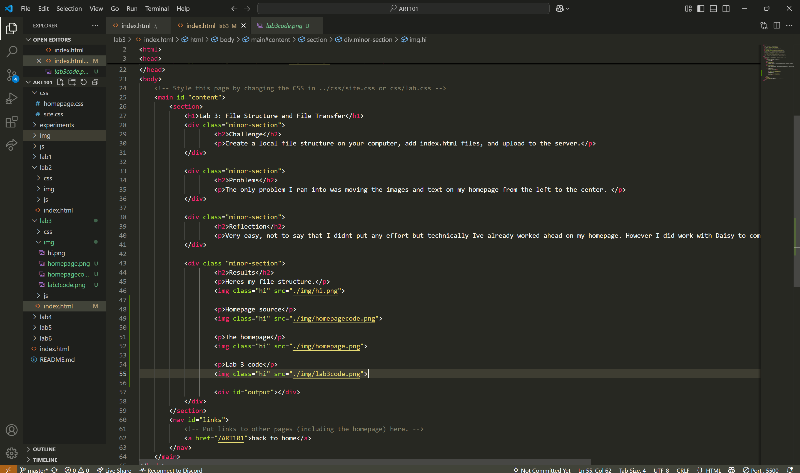

Lab 3: File Structure and File Transfer
Challenge
Create a local file structure on your computer, add index.html files, and upload to the server.
Problems
The only problem I ran into was moving the images and text on my homepage from the left to the center.
Reflection
Very easy, not to say that I didnt put any effort but technically Ive already worked ahead on my homepage. However I did work with Daisy to complete the lab, as I added more content to my homepage.
Results
Heres my file structure.
Homepage source
The homepage
Lab 3 code
